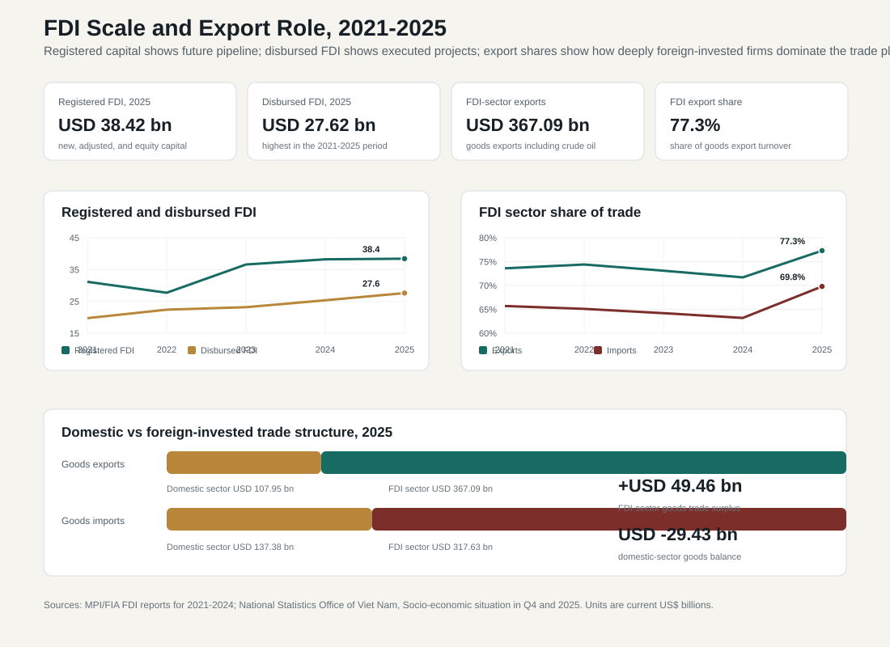
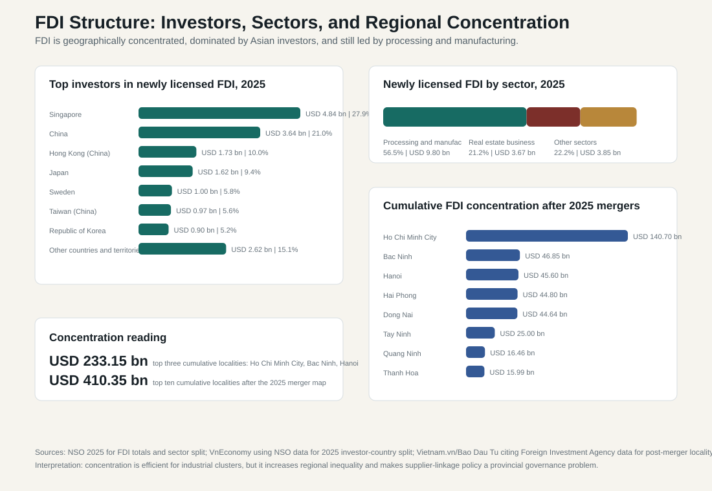

10.2 FDI and Export Manufacturing
ASEAN comparative lens (2026). Vietnam should be read in ASEAN comparison as ASEAN's most prominent party-led, export-manufacturing upgrading case. Unlike the Philippines' service-remittance profile, Thailand's older industrial-tourism base, Malaysia's resource-industrial federal structure, or Indonesia's archipelagic domestic-market scale, Vietnam's comparative issue is how a socialist party-state manages very open global production networks. For this section, the regional comparison should compare trade, FDI, current-account structure, supply-chain depth, remittances, tourism receipts, and regional integration with ASEAN peers. Local comparable indicators show: population 100.99 million (2024), rank 3 among the nine ASEAN reports in this workspace; GDP US$476.39 billion (2024), rank 4 among the nine ASEAN reports in this workspace; GDP per capita US$4,717 (2024), rank 5 among the nine ASEAN reports in this workspace; real GDP growth 7.09% (2024), rank 1 among the nine ASEAN reports in this workspace; government effectiveness 0.09 (2023), rank 6 among the nine ASEAN reports in this workspace; internet use 84.15% (2024), rank 4 among the nine ASEAN reports in this workspace. Use `sources/documents/regional/asean_comparative_lens_2026.md` together with ASEANstats, ASEAN Secretariat materials, and the country processed-indicator files before making cross-ASEAN claims.
Section 10.1 explained Viet Nam's export and import transformation. This section explains the mechanism behind that transformation: foreign direct investment. FDI is more than an inflow of capital. It is the organizational system through which multinational firms connect Viet Nam's labor force, land, industrial zones, ports, customs procedures, tax incentives, and political stability to global production networks.
The headline figures show that Viet Nam remains one of Asia's strongest FDI destinations. In 2025, total inward foreign investment registered in Viet Nam reached USD 38.42 billion, including new projects, capital adjustments, and foreign capital contributions or share purchases. Disbursed FDI reached USD 27.62 billion, up 9.0 percent year on year and the highest level in the 2021-2025 period. The distinction matters. Registered FDI is a pipeline indicator; it measures investor commitments that may be implemented over time. Disbursed FDI is the executed investment that actually enters projects, factories, equipment, construction, payroll, and operations.[1]

10.2.1 Registered FDI, Disbursed FDI, and Investor Confidence
The 2021-2025 sequence is revealing. Registered FDI moved from USD 31.15 billion in 2021 to USD 27.72 billion in 2022, then recovered to USD 36.60 billion in 2023, USD 38.23 billion in 2024, and USD 38.42 billion in 2025. Disbursed FDI rose more steadily from USD 19.74 billion in 2021 to USD 22.40 billion in 2022, USD 23.18 billion in 2023, USD 25.35 billion in 2024, and USD 27.62 billion in 2025.[1][2][3][4][5]
This pattern suggests that Viet Nam's FDI model has two strengths. First, existing investors continue to execute projects even when registered capital fluctuates. Second, the pipeline remains large enough to support future manufacturing expansion. The 2025 composition confirms this point. Newly registered FDI capital reached USD 17.32 billion across 4,054 newly licensed projects. Existing projects registered an additional USD 14.07 billion, while capital contributions and share purchases reached USD 7.03 billion. The rise of adjusted capital and equity transactions suggests that foreign investors are not only entering Viet Nam; many are expanding, restructuring, or deepening existing operations.[1]
The policy meaning is different from a simple "more FDI is good" story. High registration is useful only if projects are implemented, linked to productive sectors, supported by infrastructure, and governed cleanly. High disbursement is more meaningful because it indicates execution. But even executed FDI can create limited domestic spillovers if the project remains an imported-input assembly operation with few Vietnamese suppliers.
10.2.2 Investor Origins: Asian Production Networks Dominate
The investor-country structure shows how Viet Nam is embedded in Asian production networks. In 2025, among newly licensed FDI projects, Singapore was the largest investor, with USD 4.84 billion, or 27.9 percent of newly registered capital. China followed with USD 3.64 billion, or 21.0 percent. Hong Kong (China) accounted for about USD 1.73 billion, Japan for USD 1.62 billion, Sweden for USD 1.00 billion, Taiwan (China) for about USD 0.97 billion, and the Republic of Korea for about USD 0.90 billion.[6]

The dominance of Singapore, China, Hong Kong, Japan, Taiwan, and Korea is not accidental. These economies are closely connected to electronics, machinery, components, textiles, logistics, finance, and regional headquarters functions. Singapore's large share can include regional holding-company structures as well as operating investment. China's rising position reflects supply-chain relocation, China-plus-one strategies, and the movement of component producers and assembly suppliers into Viet Nam. Japanese and Korean investors remain important because they have long-standing production networks, quality systems, and supplier relationships in electronics, machinery, automotive components, and industrial services.
This investor composition creates opportunity and risk at the same time. The opportunity is that Viet Nam can receive production know-how, export orders, supplier standards, training, and integration into regional manufacturing systems. The risk is that Viet Nam can become an extension of foreign production networks without building enough domestic firms capable of supplying components, materials, engineering, design, testing, logistics, or after-sales services.
10.2.3 Industry Structure: Manufacturing Leads, Real Estate Still Matters
By sector, newly licensed FDI in 2025 remained strongly manufacturing-oriented. Processing and manufacturing attracted USD 9.80 billion, equal to 56.5 percent of newly licensed FDI capital. Real estate business attracted USD 3.67 billion, or 21.2 percent. Other sectors accounted for USD 3.85 billion, or 22.2 percent.[1]
This composition is broadly positive because manufacturing FDI is more directly connected to exports, employment, industrial zones, technology exposure, logistics, and supplier development than purely asset-based investment. It is also consistent with Viet Nam's export structure: manufactured goods accounted for 88.7 percent of goods exports in 2025.[1]
However, the real-estate share deserves attention. Real estate FDI can support urban development, industrial parks, logistics facilities, housing, and commercial infrastructure. But if too much FDI flows into land appreciation, speculative property, or enclave-style projects, it may raise land prices without strengthening technological capability. For a country trying to upgrade from assembly to higher-value manufacturing and services, FDI quality matters more than FDI volume.
The industry question should therefore be asked in three layers. First, does FDI enter productive sectors such as electronics, machinery, semiconductors, clean energy, logistics, digital services, and supporting industries? Second, does it create higher-skilled employment and supplier opportunities? Third, does it increase Vietnamese-owned capability, or does it mainly increase foreign-owned output produced on Vietnamese territory?
10.2.4 Regional Concentration after the 2025 Local Government Reform
FDI is not distributed evenly across Viet Nam. It concentrates in regions with industrial parks, ports, airports, expressways, skilled labor, reliable electricity, supplier density, customs capacity, and proactive provincial governments. After the 2025 administrative mergers and the move to a two-tier local government model, the geography of FDI became even more important.
Post-merger cumulative FDI data reported by Vietnam.vn / Bao Dau Tu from Foreign Investment Agency figures show Ho Chi Minh City leading with more than USD 140.7 billion in valid registered capital and 19,511 valid projects. Bac Ninh followed with more than USD 46.85 billion, Hanoi with nearly USD 45.6 billion, Hai Phong with more than USD 44.8 billion, and Dong Nai with USD 44.64 billion. Other major locations included Tay Ninh, Quang Ninh, Thanh Hoa, Hung Yen, and Ninh Binh.[7]
This pattern has clear administrative meaning. FDI attraction is not only a national investment-policy matter. It is a local governance question. Investors choose locations where land clearance is faster, infrastructure is coordinated, industrial zones are credible, labor supply is available, and provincial officials can solve problems. The 2025 merger map may create larger planning spaces for metropolitan regions and industrial corridors, but it also requires stronger coordination of land records, tax administration, labor services, environmental permits, industrial-zone management, and transport planning.
Regional concentration is efficient when it produces industrial clusters. It is risky when it deepens inequality between leading industrial regions and lagging provinces. The state must therefore use FDI clusters as learning platforms while also building connecting infrastructure, supplier programs, vocational training, and logistics links for less-developed regions.
10.2.5 FDI Firms and the Export Platform
The foreign-invested sector dominates Viet Nam's export system. In 2025, total goods exports reached USD 475.04 billion. The domestic economic sector exported USD 107.95 billion, down 6.1 percent from the previous year and accounting for 22.7 percent of total goods exports. The FDI sector, including crude oil, exported USD 367.09 billion, up 26.1 percent and accounting for 77.3 percent of total goods exports.[1]
The import side tells the same story. Total goods imports reached USD 455.01 billion in 2025. The domestic sector imported USD 137.38 billion, while the FDI sector imported USD 317.63 billion, up 31.9 percent. The FDI sector recorded a goods trade surplus of USD 49.46 billion, while the domestic sector recorded a deficit of USD 29.43 billion.[1]
This is the core of Viet Nam's export-manufacturing model. FDI firms import machinery, components, intermediate goods, materials, and production inputs; use Viet Nam as a manufacturing and assembly platform; and export finished or semi-finished goods to global markets. The model has produced extraordinary export growth, but it also means that much of the export system is organized by foreign firms and foreign supply chains.
This is not a failure. It is a stage of development. FDI-led exports have generated jobs, industrial discipline, logistics demand, worker learning, tax revenue, foreign exchange, and production visibility. But it is an incomplete development model if domestic firms remain outside the higher-value parts of the chain.
10.2.6 Domestic Linkages and the Spillover Problem
The domestic linkage problem is the central weakness of Viet Nam's FDI model. OECD analysis warned that Viet Nam risks a dualistic economic structure if foreign-invested exporters, SOEs, large private groups, and smaller domestic firms operate under unequal opportunities and weak integration. OECD also emphasized that linkages with domestic firms do not emerge automatically; they require domestic technological and managerial capability. When capability gaps are large, multinationals tend to rely on their own foreign suppliers rather than local Vietnamese firms.[8]
The trade data support this diagnosis. A country in which the FDI sector accounts for 77.3 percent of goods exports and about 69.8 percent of goods imports is deeply integrated into global production. But that same structure can limit domestic value added if Vietnamese firms supply mainly low-value services, packaging, simple inputs, labor, land, utilities, and logistics rather than components, tooling, design, engineering, software, certification, testing, and after-sales functions.
The problem is not only firm capability. It is also administrative. Domestic suppliers need finance, quality certification, testing laboratories, standards information, contract enforcement, tax predictability, customs transparency, industrial land, skilled technicians, and connections to multinational procurement systems. Provincial investment-promotion agencies often try to match foreign investors with local suppliers, but matchmaking alone is weak if local firms cannot meet cost, quality, delivery, environmental, and compliance standards.
10.2.7 Policy Interpretation
Viet Nam should treat FDI as a platform, not a destination. The first-stage success is clear: the country has attracted large capital commitments, executed record disbursements, built manufacturing exports, and become a critical node in Asian supply chains. The second-stage challenge is more demanding: raise domestic value added, strengthen supporting industries, reduce excessive imported-input dependence, and ensure that technology spillovers become real capabilities inside Vietnamese firms.
This requires a shift from attraction policy to embedding policy. Investment promotion should still bring in capital, but screening and incentives should favor projects that provide local procurement, workforce training, technology transfer, R&D, engineering, design, energy efficiency, and domestic supplier development. Industrial-zone governance should include supplier databases, certification support, logistics services, worker training, environmental compliance, and dispute-resolution channels. Customs and tax agencies should support rules-of-origin compliance so that FDI-led exports do not become vulnerable to transshipment scrutiny.
Viet Nam has already proved that it can attract FDI. The next stage is conversion: turning foreign-invested production into Vietnamese supplier capability, engineering depth, managerial learning, and technological absorption. If that conversion works, FDI will support movement toward higher income and technological upgrading. If it stalls, Viet Nam may remain an exceptionally successful export platform while domestic firms capture too little of the knowledge, profits, and strategic capabilities embedded in global production.
[1]: https://www.nso.gov.vn/en/data-and-statistics/2026/01/socio-economic-situation-in-the-fourth-quarter-and-2025/ "National Statistics Office of Viet Nam, Socio-economic situation in the fourth quarter and 2025"
[2]: https://www.mpi.gov.vn/en/Pages/2021/Report-on-foreign-direct-investment-in-2021-739397.aspx "Ministry of Planning and Investment, Report on foreign direct investment in 2021"
[3]: https://mpi.gov.vn/en/Pages/2022/Report-on-foreign-direct-investment-in-2022-403479.aspx "Ministry of Planning and Investment, Report on foreign direct investment in 2022"
[4]: https://www.mpi.gov.vn/en/Pages/2023-12-29/FDI-attraction-situation-in-Vietnam-and-Vietnam-s-fh2c25.aspx "Ministry of Planning and Investment, FDI attraction situation in Vietnam and Vietnam's overseas investment in 2023"
[5]: https://www.mpi.gov.vn/en/Pages/2025-1-14/FDI-attraction-situation-in-Vietnam-and-Vietnam-s-ehsipf.aspx "Ministry of Planning and Investment, FDI attraction situation in Vietnam and Vietnam's overseas investment in 2024"
[6]: https://en.vneconomy.vn/vietnam-attracts-3842-billion-of-fdi-in-2025.htm "VnEconomy, Vietnam attracts $38.42 billion of FDI in 2025"
[7]: https://www.vietnam.vn/en/hau-sap-nhap-dia-phuong-nao-dan-dau-ve-thu-hut-von-fdi "Vietnam.vn / Bao Dau Tu, post-merger FDI locality concentration"
[8]: https://www.oecd.org/en/publications/multi-dimensional-review-of-viet-nam_367b585c-en/full-report/component-12.html "OECD Multi-dimensional Review of Viet Nam, leveraging FDI to develop firm-level capabilities"